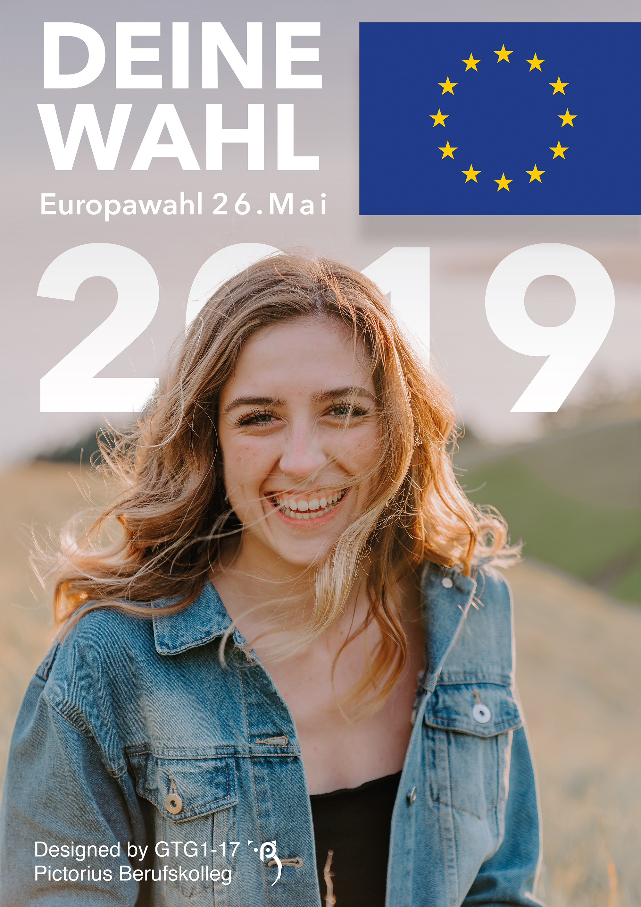
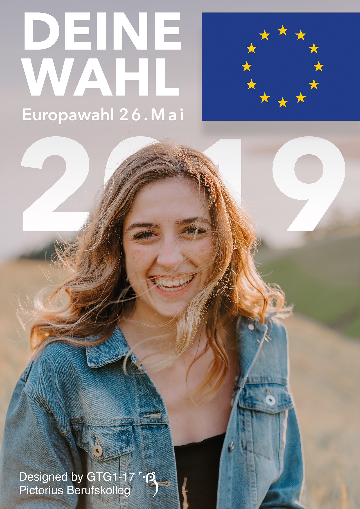

Info:
This is a logo for an event design company, located in New York City. I was asked to redesign the current branding concept, giving the brand a new style and fresh feeling.
Around this logo i also created a brand identity, complimenting the new look of the brand.
I was asked to redesign the current branding concept, giving the brand a new style and fresh feeling.
Around this logo i also created a brand identity, complimenting the new look of the brand.
This is a logo for an event design company, located in New York City.
I was asked to redesign the current branding concept, giving the brand a new style and fresh feeling.
Around this logo i also created a brand identity, complimenting the new look of the brand.
 
This poster series is for the europe elections.
It affects the youth to vote and to become involved into politics and our future.
The posters were displayed in Coesfeld, so as many people as possible could see them and go tot he elections.

This poster series is for the europe elections.
It affects the youth to vote and to become involved into politics and our future.
The posters were displayed in Coesfeld, so as many people as possible could see them and go tot he elections.
 This is a project to bring together refugees and natives. It is a communication bench zu strengthen the society by connecting people from different cultures and countries.
The Design is currently drawn onto the bench by painting trainees and after that it will be set up in a well visited place in Coesfeld.
This is a project to bring together refugees and natives. It is a communication bench zu strengthen the society by connecting people from different cultures and countries.
The Design is currently drawn onto the bench by painting trainees and after that it will be set up in a well visited place in Coesfeld.